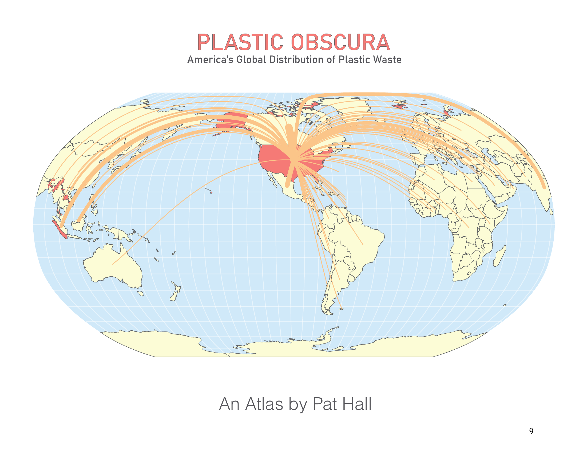
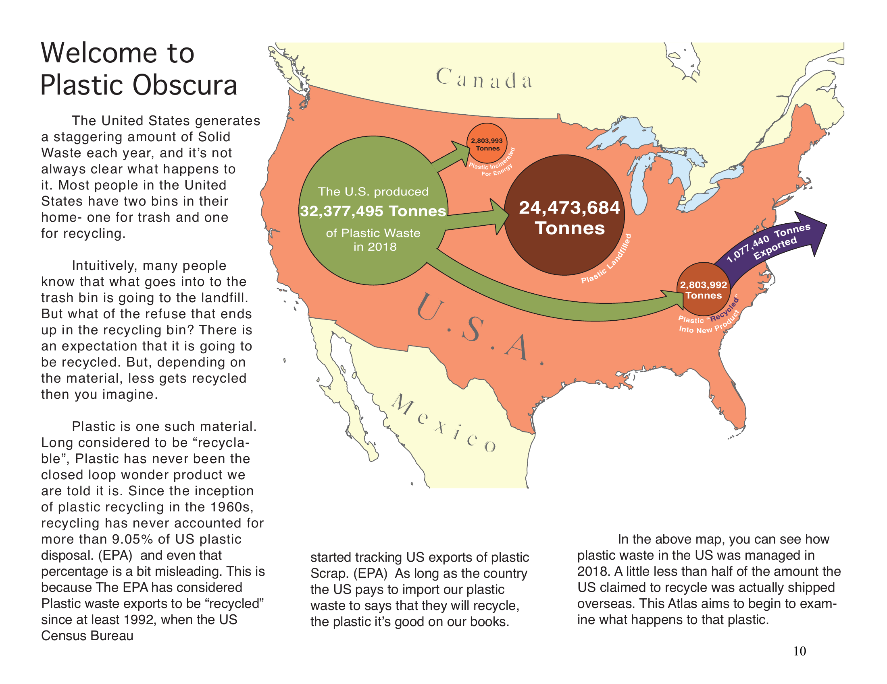
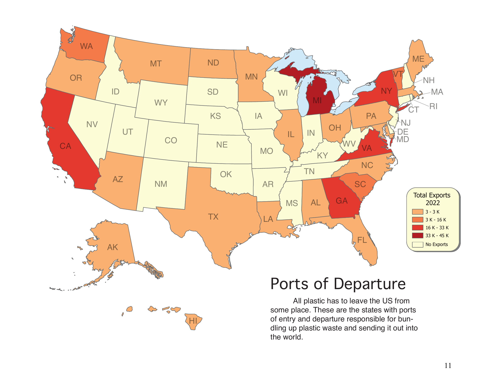
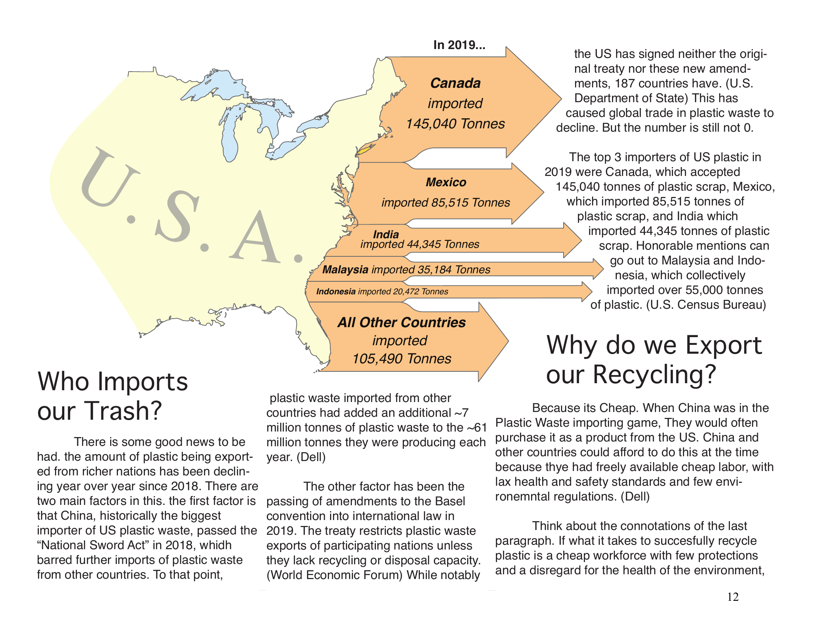
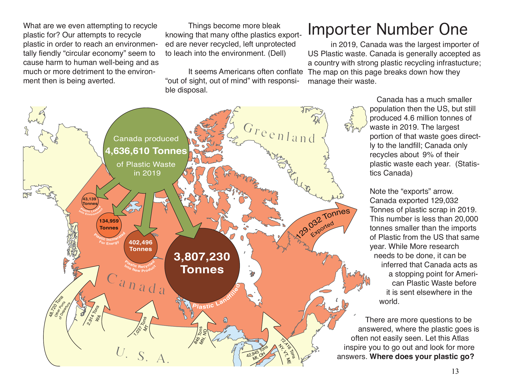
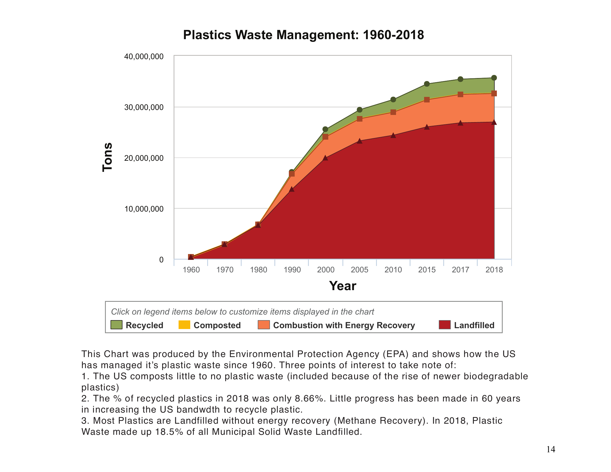
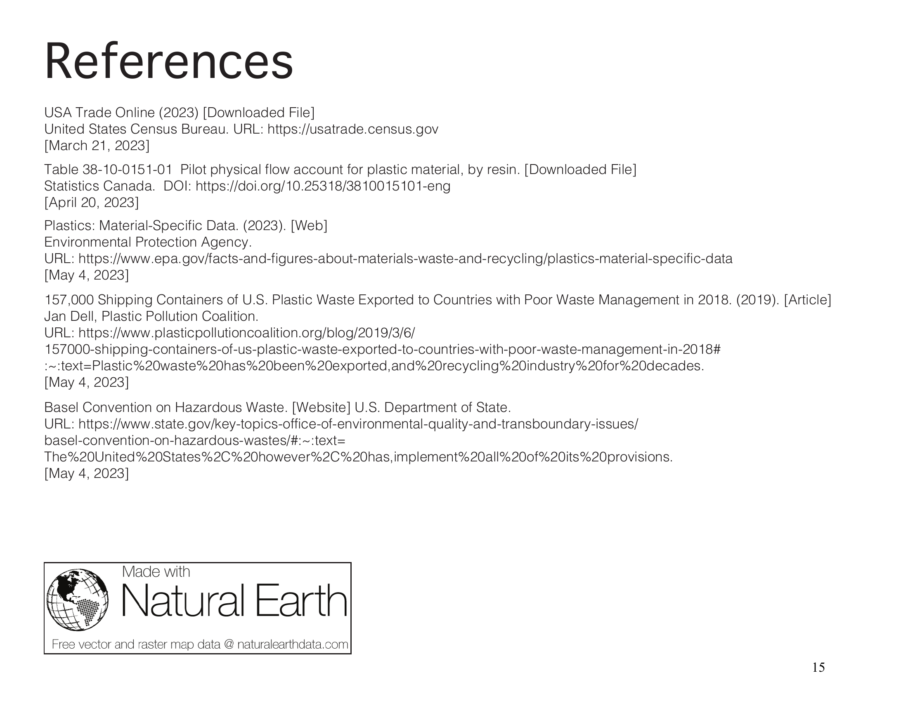

Overview
In 2023 I put together a mini-atlas for a Cartography class. For me, this was an exciting opportunity to dive into a topic I have found interesting since first hearing a story in the news about how the US does not really recycle plastic.
I took a deep dive into the US Census Bureau's Economic Database, and produced a final project I was proud of.
Design Inspiration
The design took inspiration from the cartography of William Bunge, specifically his map titled "Direction of Money Transfers in Metropolitan Detroit."
Gallery






